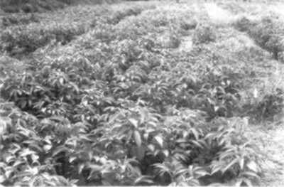

There are two important sassafras oils of commerce: Brazilian sassafras oil, obtained from the trunkwood of Ocotea pretiosa, and Chinese sassafras oil from Cinnamomum camphora. Both contain 80 percent or more of safrole.
True sassafras oil, from the roots of North American Sassafras albidum, is no longer produced commercially, although it was once the main flavour constituent of "root beer". Its use for such purposes, and in other foods and drinks, has been banned for some years because of fears of health risks associated with consumption of safrole.
Only Brazilian and Chinese oils are discussed here, together with oils from Piper species, which show considerable promise as alternative, sustainable sources of safrole.
Sassafras oil was formerly used in numerous household fragrance applications such as floor waxes, polishes, soaps, detergents and cleaning agents. Its ability to blend with other oils and its powerful masking properties made it valuable for such purposes.
However, the principal use today is as a raw material for the isolation of safrole. This is then converted by the chemical industry into two important derivatives: heliotropin, which is widely used as a fragrance and flavouring agent, and piperonal butoxide (PBO), a vital ingredient of pyrethroid insecticides. Natural pyrethrum in particular would not be an economical insecticide without the addition of PBO as a synergist and the future of the natural pyrethrum industry is linked to the continued availability of PBO.
Excluding the People's Republic of China, for which consumption levels are not known, demand for sassafras oil is estimated to be around 2,000 tonnes annually. Most of this is destined for heliotropin and PBO manufacture, the two outlets taking approximately equal amounts of oil.
Exports of sassafras oil from Brazil for the period 1986-90 are given in Table 5, which also shows the destinations for the two years 1986 and 1987.
Japan, Italy and the United States are the most important markets for the oil (the latter being the largest market for applications other than derivative manufacture). These countries, along with some other minor manufacturers, then export the heliotropin and PBO worldwide. Brazil has some manufacturing capacity for both heliotropin and PBO (equivalent to about 500 tonnes of sassafras oil) although a shortage of domestically produced oil has led to it importing some Chinese oil.
The demand for sassafras oil is determined by the markets for heliotropin and PBO. Heliotropin consumption is increasing, particularly in Eastern Europe, Asia and some developing countries, and sassafras oil is the preferred raw material for its manufacture. If supplies of the oil become tight, however, or its price rises markedly, then synthetic heliotropin would become more attractive.
Demand for PBO, both in conventional pyrethroid insecticides and in other insecticidal outlets now being developed, is also increasing but, in this case, the possibility of utilizing synthetic PBO to make up any shortage of sassafras oil-derived PBO is less attractive economically. The overall prospects for a sassafras type of oil are therefore very good.
More than half the sassafras oil currently entering world trade originates from the People's Republic of China. While this is likely to remain the case in the near future, Chinese domestic requirements for the oil will increase as technology for the manufacture of PBO is acquired and added to that which already exists for heliotropin production. This, together with supply difficulties caused by the destructive nature of production from wild C. camphora, means that in the longer term there are likely to be increasing amounts of sassafras oil diverted from exports to internal use.
Up until the 1960s, Brazil was the major exporter of sassafras oil. Production has declined since then as a result of depletion of the natural resource from which it is obtained, wild O. pretiosa in the Mata Atlantica areas of southern Brazil. Restrictions imposed on the felling of the trees in the late 1980s have resulted in a further decline in production and this is illustrated by the falling level of Brazilian exports (Table 5).
Since 1990, Viet Nam has been exporting sassafras oil. Current exports are believed to be of the order of several hundred tonnes pa, but with reliance, again, on wild trees (C. camphora), it is expected that supplies from this source will be relatively short-lived.
The current dependence worldwide on unsustainable exploitation of wild forest trees means that supplies from these sources will progressively reduce.
Brazilian sassafras oil is traditionally described in trade terms as containing 84 percent safrole, although it usually contains a few per cent more. Chinese oil has a higher specification, 90 percent safrole, as a result of its method of production. (It is obtained not as a whole oil but as a safrole-rich fraction from the crude oil distilled from C. camphora. The major fraction consists chiefly of camphor.)
For conversion into heliotropin or PBO a minimum safrole content of 86 percent is preferred. The abundance of chemically similar compounds in the oil, such as methyl eugenol, should be low.
For some time, prices of sassafras oil were of the order of US$4/kg. During a brief shortage of sassafras in 1991/92 (caused largely by speculative stock-piling in the Far East) prices of Chinese oil were around the US$6-7/kg level. When this shortage was remedied prices eased and in early 1994 Chinese sassafras oil was on offer from London dealers at under US$4/kg. Brazilian prices are usually higher than those for Chinese oil.
Family Lauraceae:
| Ocotea pretiosa (Nees) Mez. (syn. O. cymbarum) | Brazilian sassafras |
| Cinnamomum camphora Nees | Chinese sassafras |
Ocotea pretiosa is a medium-sized tree which grows wild in many parts of southeastern Brazil as well as Columbia and Paraguay. It has only ever been exploited commercially for oil production, however, in the Brazilian state of Santa Catarina. It is only here that trees with a suitably high safrole content are found.
Cinnamomum camphora occurs throughout much of Southeast Asia but its exact distribution and abundance are not known with any certainty. Large areas of wild trees once grew in Japan and Taiwan but these have largely disappeared through over-exploitation for camphor production in the years up to the Second World War. The botanical status of C. camphora and its varieties is also complex and there are several different chemotypes (see CINNAMOMUM OILS).
In both Brazil and the People's Republic of China, loss of trees by felling for oil production has been considerable. As mentioned earlier, concern over this led the Brazilian government to introduce regulations limiting the cutting of O. pretiosa. In the early years of the Brazilian industry trees over fifty years of age were common and yielded large amounts of oil. Today, the resource is seriously depleted and tree diameters are comparatively small. No significant replanting has ever occurred. Expressions of concern over the depletion of C. camphora have also been voiced by Chinese researchers.
In Brazil, trees are felled and cut into suitably sized logs for transportation to the distillery. There they are chipped and reduced further in size before being placed in the distillation vessels. Steam is raised by burning waste and spent wood. Distilleries are a mix of family and larger-sized operations.
Little information is available on the details of processing C. camphora in the People's Republic of China or Viet Nam. The crude oil obtained by primary distillation of the chipped wood is fractionated to remove camphor and furnish a safrole-rich oil.
In both O. pretiosa and C. camphora oil yields are variable and dependant upon the quality of the wood feedstock. Higher yields are obtained from trunkwood from older trees and branchwood gives lower yields than trunkwood. Yields and oil composition undoubtedly vary, both within and between natural populations of trees, but the extent of this variation has not been well documented. A chemotype of O. pretiosa, which yields an oil rich in methyl eugenol, is known to occur in Brazil although its geographical distribution is distant from the Santa Catarina harvesting areas. Information is not available on the yields of oil obtained from coppiced C. camphora; the multiplicity of compositional types for the species is referred to elsewhere (see CINNAMOMUM OILS).
A large part of the total production of Brazilian and Chinese sassafras oil is exported whole to those importing countries where conversion to heliotropin and PBO takes place. Some manufacture of both derivatives occurs in Brazil and in the People's Republic of China heliotropin is produced. The products in both countries are then used partly to meet domestic needs and partly to serve overseas customers.
The value of the trees for oil production means that they are rarely used for other purposes.
In the case of C. camphora, there is the potential for regeneration after felling the tree due to its ability to coppice but no information is available on the practicality or economics of this. The possibility of utilizing other Cinnamomum species as sources of safrole, not only in the People's Republic of China but elsewhere in Southeast Asia, is discussed briefly in the section on CINNAMOMUM OILS.
For O. pretiosa, the prospects of bringing it into formal cultivation - a necessary measure, since the depleted natural resource is now incapable of sustaining high levels of utilization - are unknown but may prove uneconomic. Like Aniba (see ROSEWOOD OIL) much basic information is lacking and, while this could be acquired through a concerted research effort, a more satisfactory outcome is likely to be obtained from research into alternative sources of safrole. The potential of certain Piper species to provide such an alternative in Brazil is therefore discussed below.
Certain forest shrubs of the Piperaceae family, indigenous to the humid forests of Central America and Greater Amazonia, have been found to contain high levels of safrole in their leaves. With further research they offer good prospects as new, commercial sources of safrole. Their successful development would also bring other social and economic benefits, albeit on a modest scale, to a region which is at the centre of world attention on environmental issues.
Piper auritum occurs from Mexico to Panama and is one species which has attracted attention. The leaf oil contains around 70 percent safrole and pilot-scale cultivation and distillation trials were conducted for a brief period in Mexico in the 1980s at INIREB, Xalapa. There appears to be no current work being conducted on this species and its potential remains uncertain.
The Brazilian Amazon contains a wide variety of Piper species and since 1990 attention has been focused on two with high safrole content in their leaves, P. hispidinervium and P. callosum. This work has been funded by ODA and has been undertaken by the Museu Paraense Emilio Goeldi in Belem in collaboration with the Centre for Agroforestry Research (CPAF-EMBRAPA) in Acre and supported by technical assistance from NRI. Progress to the end of 1992 has been reported by MAIA et al. (1993). Subsequently, P. collosum has been relegated in the research work in favour of the more promising P. hispidinervium.
The discussion on P. hispidinervium which follows is intended to highlight the developmental potential of the species and the ways in which research are being directed. The same basic approach can be applied to many other situations where it is required to bring wild forest species into semi-formal cultivation.
P. hispidinervium as an example of a species suitable for agroforestry intervention
P. hispidinervium is most frequently found on degraded forest or farm land where it occurs as a colonizing "weed", either as a pure stand or along with other Piper species. Surveys have revealed that it occurs in the majority of settled areas throughout Acre state in Brazil and it is believed to extend into Amazonas state as well as Peru and Bolivia. On natural sites, plants develop initially into bushes and at an early stage they appear to inhibit growth of competing vegetation. As the plants age they become more tree-like and stands up to 10 m in height may be found.
Techniques for propagation have been developed and growing trials established at several sites in Brazil using both rooted cuttings and seedlings. The trials are designed to provide information on growth characteristics and biomass yields (leaf + stem) under various planting and management regimes. Pilot-scale distillations have been conducted to determine oil quality and yields and permit estimation of productivity on a "per hectare per year" basis. Only by such means, together with knowledge of prevailing and projected oil prices, can economic returns to the farmer be calculated. The safrole content of the oil in unselected stock is about 85 percent. Improvement to 90 percent appears possible through selection.
Results to date indicate that the most likely form of exploitation is one in which the plants are first harvested at 6-8 months, with subsequent harvests at 4-6 month intervals for at least 3 years. Harvesting entails simply cutting the primary or re-growth stems approximately 20 cm above ground level.
Mixed planting of P. hispidinervium with young cash crop trees is a practical possibility and would be economically attractive to a farmer. Harvesting of P. hispidinervium would permit an early cash return during the period before the first harvest of the tree crop.
Development of P. hispidinervium to a point where it can be recommended to farmers for planting requires further research and reappraisal and this is in hand. The following areas of study are included in this programme. They may be taken as a general guide to the approach necessary for the development of any other forest crop.
- Observation of the species in its natural habitat to learn more about its variability and ecological requirements.
- Identification of superior germplasm for planting purposes. A larger number of natural populations needs to be sampled and tested for oil yield, quality (safrole content) and growth characteristics (biomass production).
- Determination of the best method of propagation (vegetative or from seed) in terms of survival, vigour and growth of the plants and the speed and ease of mass multiplication.
- Assessment of growth performance and oil production of selected planting stock at more sites to determine optimum climatic and edaphic conditions and the adaptation range of the species. In due course, this should be extended to on-farm trials to determine probable production costs.
- The effects of spacing, fertilizer application and cropping interval on biomass and oil yields.
- Closer monitoring of the seasonality of oil production within the plant in order to better assess the optimum time for harvesting.
- Identification, through socio-economic studies, of farmers who would adopt and benefit from production.
- Determination of the optimum form of management of the combined cultivation/distillation operation (i.e. are the plants best grown and distilled on a family basis using small-scale field stills; on a cooperative system; or by outgrowers supplying a large, central distillery?).
- Specification of marketing systems (farmer to buyer).
NB References to C. camphora are included in the bibliography for CINNAMOMUM OILS.
GOTTLIEB, O.R. and MAGALHAES, M.T. (1960) Physiological varieties of Ocotea pretiosa. II. Perfumery and Essential Oil Record, 51, 18-21.
GUPTA, M.P., ARIAS, T.D., WILLIAMS, N.H., BOS, R. and TATTJE, D.H.E. (1985) Safrole, the main component of the essential oil from Piper auritum of Panama. Journal of Natural Products, 48(2), 330.
LAWRENCE, B.M. (1985) Progress in essential oils. Ocotea oil. Perfumer and Flavorist, 10(4), 48-51.
MAIA, J.G. et al. (1987) Especies de Piper da Amazonica ricas em safrol. Quimica Nova, 10(3), 200-204.
MAIA, J.G., GREEN, C.L. and MILCHARD, M.J. (1993) New sources of natural safrole. Perfumer and Flavorist, 18(2), 19-22.
MOLLAN, T.R.M. (1961) The essential oils of the
sassafras laurels. I. Ocotea pretiosa, Brazilian
sassafras, safrole type. Perfumery and Essential Oil Record,
51, 284-286.
1 : Wild Piper hispidenervium growing on
forest verge, Acre state, Brazil, [ C, Green, NRI ]

2 : Field trials: Coppiced Piper
hispidenervium awaitingits fourth harvest, Brazil [ D. Baker, NRI
]
Table 5
Exports of sassafras oil from Brazil, and destinations, 1986-90
(tonnes)
| 1986 | 1987 | 1988 | 1989 | 1990 | |
| Total | 1582 | 1302 | 970 | 394 | 280 |
| Of which to: | |||||
| Japan | 543 | 596 | na | na | na |
| USA | 274 | 359 | na | na | na |
| Italy | 281 | 292 | na | na | na |
| China,People's Rep. of |
154 | - | na | na | na |
| UK | 169 | 15 | na | na | na |
| Spain | 124 | 25 | na | na | na |
| France | 11 | 7 | na | na | na |
Source: Brazilian national statistics
Chapter 3 - SASSAFRAS OIL
"Flavours and fragances of plant origin"
NON-WOOD FOREST PRODUCTS 1
FAO - Food and Agriculture Organization of the United Nations
M-37, ISBN 92-5-103648-9, (c) FAO 1995